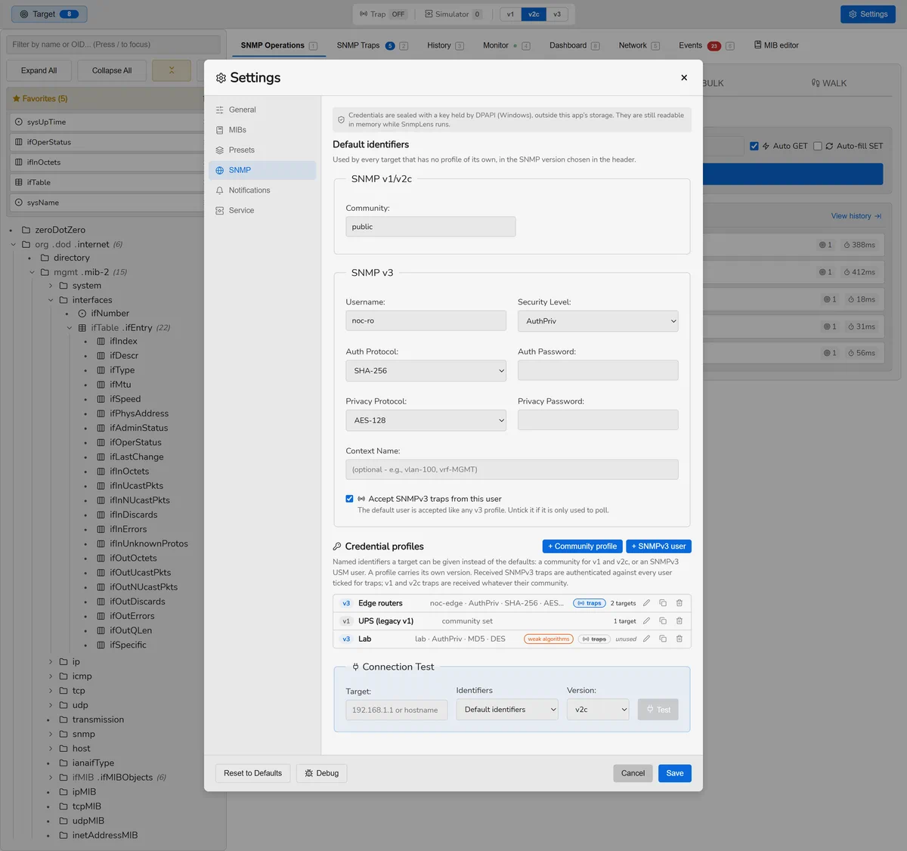
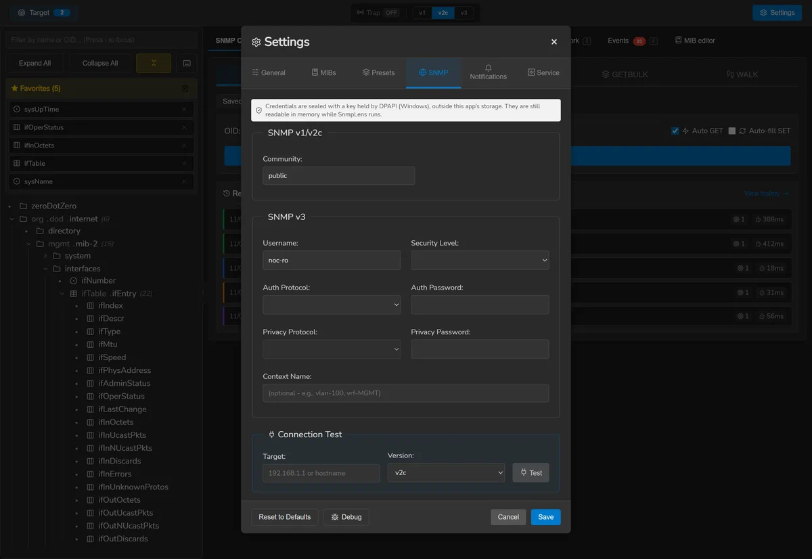
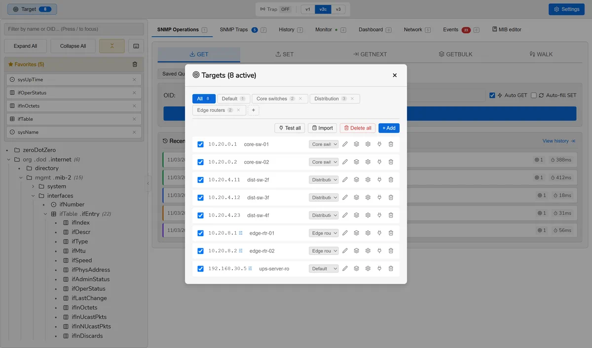
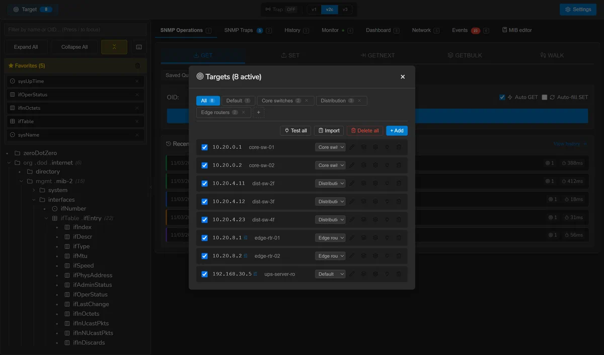
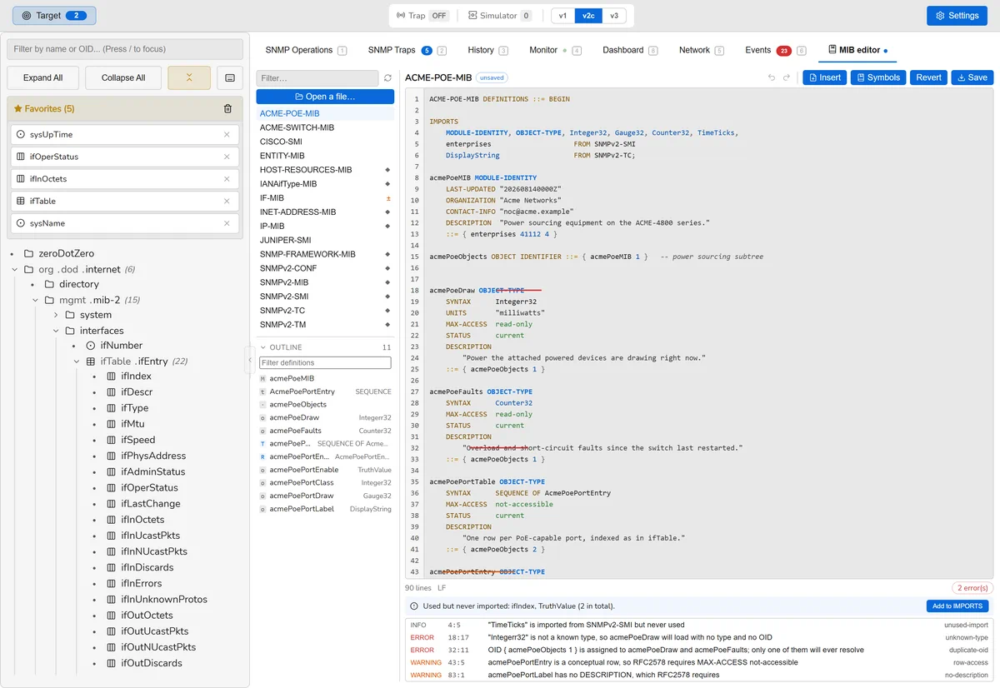
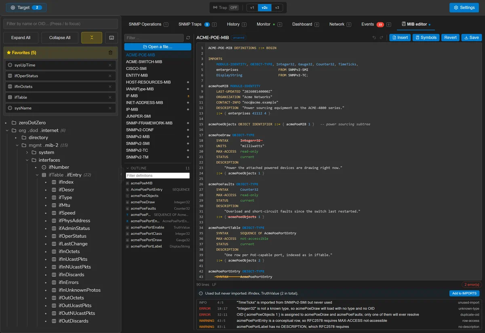
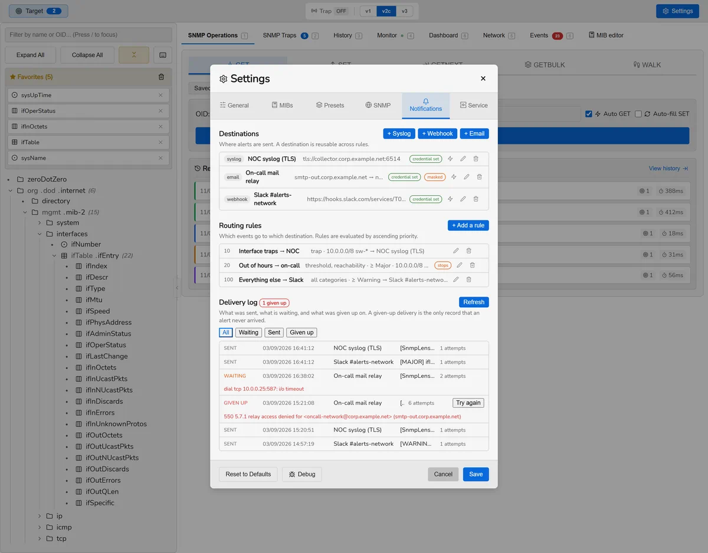
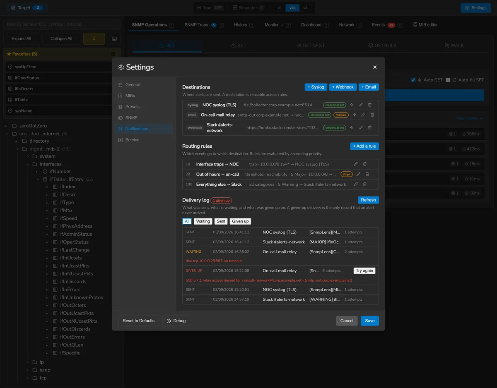

Documentation
Everything SnmpLens does, and the reasoning where the reasoning matters. If something here disagrees with the application, the application is right — please open an issue.
Installing
SnmpLens is one executable with no runtime to install. Pick the asset for your platform on the download page, which also lists the checksums and how to verify them.
Nothing is written outside your user configuration directory, and no service is registered unless you ask for one in Settings.
Linux: the application needs GTK 3 and WebKit2GTK at runtime. On
Debian and Ubuntu, libgtk-3-0 and libwebkit2gtk-4.1-0.
The .deb declares them; the tarball does not.
Your first query
- Open the Operations tab (Ctrl 1).
- Type a target — a hostname, an IPv4 address, or an IPv6 literal.
- Set the version and community, or the v3 credentials, in Settings (Ctrl ,).
- Pick an OID from the MIB tree on the left, or type one, and press GET.
Double-clicking a node in the tree performs a GET on it directly. For a whole subtree, use WALK — or GETBULK against a v2c or v3 device, which asks for many rows per request instead of one.
Addresses may be written the way you would write them anywhere else. An IPv6
literal can be bracketed or not, and a link-local address keeps its zone:
fe80::1%eth0 works.
A device to practise on
The repository carries a Python SNMP agent so you can use everything here without
touching production equipment. It needs Python 3.10 or newer, and
pycryptodome only if you want v3 privacy.
pip install pycryptodome
python tools/snmp_test_agent.py --trap-port 1162 --trap-interval 10
It serves realistic OIDs — system, ifTable,
ifXTable, IP, SNMP statistics, hrSystem,
hrStorage — with five interfaces whose counters actually move, and it
sends periodic traps.
| Version | User | Authentication | Privacy |
|---|---|---|---|
| v1 / v2c | — | community public | — |
| v3 | snmplens | SHA / authpass123 | AES-128 / privpass123 |
| v3 | sha256user | SHA-256 / authpass123 | AES-128 / privpass123 |
| v3 | sha512user | SHA-512 / authpass123 | AES-256 / privpass123 |
| v3 | authonly | SHA / authpass123 | none |
| v3 | noauthuser | none | none |
Operations
GET, SET, GETNEXT, GETBULK and WALK. Give several targets — separated by commas or newlines — and they are queried concurrently, one result block per device.
Reading the results
A walk comes back as a flat list of OIDs. When the OIDs belong to a table, the table view pivots them into columns and splits them into rows; see conceptual tables for what that involves.
Values are formatted for reading rather than for machines: TimeTicks become a
duration such as 127d 3h 46m, large counters get thousand separators,
and an OCTET STRING that is not printable is shown as hex. The raw value is always a
click away, and any cell can be copied on its own.
The filter bar above a result set accepts a regular expression and searches OIDs, resolved names, types and values at once — useful for finding one interface in a walk of two hundred.
Writing
SET writes a value with the wire type worked out from the object's base type in the MIB, not from the name of its textual convention. That distinction matters: a Gauge32, a TimeTicks and a Counter32 are not INTEGERs on the wire, and one wrong tag makes an agent refuse the request.
A SET is a write to live equipment. SnmpLens does not simulate it, ask twice, or keep an undo. Read conceptual tables before creating rows.
Comparing devices
With more than one target, results can be shown side by side with the delta and the percentage difference between them — the quick way to find the one switch whose configuration drifted.
Watching the wire
The debug panel shows the packets as they are sent and received, with a live refresh. Community strings and v3 passphrases are removed at the point the entry is written, not when it is displayed, so they are never in the buffer to begin with.
Versions and credentials
SNMP v1, v2c and v3 are supported everywhere, including traps and informs.
| v3 security | Supported |
|---|---|
| Authentication | MD5, SHA-1, SHA-224, SHA-256, SHA-384, SHA-512 |
| Privacy | DES, AES-128, AES-192, AES-256 |
| Levels | noAuthNoPriv, authNoPriv, authPriv |
Credentials are held by the operating system's own protection — DPAPI on Windows, the Keychain on macOS, a file readable only by your account on Linux — and are never written beside the database. The settings screen names the backend actually in use, because those three protect against genuinely different things: the first two tie the key to your account, while the Linux file keeps it away from other accounts and out of a copied profile, and nothing more.
If the protector cannot be opened — a locked keychain, a directory that cannot be written — saving a credential fails and says so. It is never silently discarded, and good ciphertext is never overwritten with a half-sealed value.


Targets and overrides
Targets can be grouped, and any one of them can override the defaults: a different version, community, port, or set of v3 credentials. That is the usual shape of a real estate, where the core switches were migrated to v3 and the rest were not.
Test connection checks reachability and credentials before you run an operation against fifty devices.


Conceptual tables
A walk is a flat list; a table is that list pivoted by column and split by INDEX. The split has to follow the MIB, because how many sub-identifiers an index object consumes depends on its SYNTAX, on whether its size is fixed, and on whether the row declares IMPLIED — RFC 2578 §7.7.
This is the difference between tcpConnTable — whose INDEX is four
objects — rendering as a local address, a local port, a remote address and a remote
port, and rendering as one opaque 10.0.0.5.161.192.168.1.9.50000 per
row. It is also why tables here sort 9 before 10 rather than after it.
Creating and deleting rows
A table is editable only if it has a RowStatus column, because RFC 2579
gives no other way to create or destroy a row.
Creating a row writes every column and the RowStatus in a single SET. RFC 3416 makes a SET atomic across its varbinds, so doing it one column at a time would ask the agent to accept a row that is incomplete at every step, and leave half of one behind when it refuses. Index columns are never written — their value is carried by the instance.
An OCTET STRING index accepts the colon-separated hexadecimal the table displays, so a MAC-keyed table can be written as well as read.
Managing MIBs
The standard SNMPv2 MIBs are compiled into the binary and extracted on first run into your configuration directory. That directory is the single source of truth afterwards: MIBs you add live beside them and are loaded the same way.
Add your own by dropping files — or whole folders — anywhere on the window. Folders are scanned recursively, duplicates are detected, and if anything fails to load you get a report naming each file and what went wrong rather than a single count.
MIBs can be switched off individually. An empty selection means none, not all — turning everything off loads nothing, rather than quietly loading the whole directory.
F5 reloads every MIB from disk without restarting.
Why a MIB did not load
The library underneath answers “Could not load module at X” for a missing file, a PDF, a syntax error on line 412 and an unsatisfiable IMPORTS clause alike — the same sentence for four unrelated problems. SnmpLens recovers the real message and reports:
- a stage — read, content, parse, imports, build, semantic, loaded — so you know how far it got;
- the position, with an excerpt of the file and a caret under the offending token;
- the imports that cannot be satisfied, and the symbols each one was needed for;
- a dependency chain followed to its root when the failure is in something this MIB imports.
It also recognises the files people download by mistake — an HTML error page, a PDF, a zip archive, a UTF-16 file — because all four otherwise arrive as that same sentence. And it warns when a file's name does not match the module inside it, which loads perfectly and then cannot be found by anything that imports it.
A module can load and still be broken. Imports resolve lazily, so a MIB importing a module you do not have reports success and then resolves to nothing. Diagnostics are therefore offered on successes too, and a missing import stays the headline rather than the unresolved references it causes.
The MIB editor
Ctrl 7. Edits the MIBs in your configuration directory, or opens one from anywhere and saves it in.
Three kinds of checking
Because three different things can be wrong, and each is found by a different pass:
| Pass | Finds | When |
|---|---|---|
| Parser | Syntax errors, with line and column | As you type |
| Loader | Whether the module can be built at all | On demand |
| Analysis | Unknown types, duplicate OIDs, unresolved parents, missing modules in FROM, undefined INDEX objects, readable conceptual rows | On pause |
The third exists because of a measurement: a MIB declaring SYNTAX Integerr32
and assigning the same OID twice loads with no error at all, then resolves
both objects to a nil type and an empty OID with nothing anywhere saying a word.
Imports
The editor reports which symbols are used without being imported and which module each comes from, and can insert them. The fix edits the IMPORTS clause as text rather than reprinting the file, because a MIB carries comments and alignment that no printer would preserve.
Safety
Editing is safe to attempt — a failed load leaves the previously loaded tree
untouched. What is not safe is succeeding at saving a broken standard MIB, since
nearly everything imports from SNMPv2-SMI and SNMPv2-TC.
So bundled MIBs are marked, backed up automatically before they are overwritten,
restorable to the shipped version, and the tree is health-checked after a reload.
Backups go to a sibling directory rather than beside the MIB, because
IF-MIB.123.bak next to IF-MIB would be loaded first as the
same module and win. Unsaved work is mirrored to a draft file, so it survives closing
the window.


Traps and informs
The listener receives v1, v2c and v3 notifications on a port you choose, resolves the trap OID through your MIBs, and can raise a native desktop notification. Received traps can be filtered and exported to CSV.
Every trap is written to the event journal before anything else happens with it. That ordering is what makes collection work with the window closed: the on-screen list is a view, the journal is the record.
Sending
Traps can be sent to test a receiver, and so can informs — the acknowledged form. The acknowledgement is reported, because it is the entire reason to send one rather than a trap.
An inform on v1 is refused, not downgraded to a trap. RFC 1157 has no InformRequest PDU, so there is nothing to send, and a caller who asked for a confirmed notification must not be told they got one.
Binding uses the bare :port wildcard, which Go opens as a dual-stack
socket, so an IPv4 and an IPv6 device reach the same listener.
Monitoring
A monitoring session polls a set of OIDs on a set of targets at an interval, stores every sample, and charts them. Sessions can be paused, resumed and deleted, and are restored when the application starts.
| View | Shows |
|---|---|
| Value | The counter or gauge as read |
| Delta | The change since the previous sample |
| Rate | Change per second, over the time that actually elapsed |
| Latency | How long the device took to answer |
Counter wraps are corrected rather than plotted as a cliff, and rates are derived from the measured interval rather than the configured one — a poll that ran late would otherwise show as a spike.
Thresholds
Each monitored OID can carry a minimum, a maximum, and a duration it must be breached for. Crossing one opens an episode; coming back closes it. Both are events, which is what makes an alert de-duplicate: a value oscillating around its threshold produces one incident, not forty.
A device that stops answering is its own kind of episode, separate from any threshold — the distinction between “this is too high” and “I cannot tell”.
Running in the background
The poll clock lives in the Go backend, one scheduler per session, so closing the window does not stop monitoring. Optionally SnmpLens can keep running in the system tray and start with your session — a per-user login entry, never machine-wide, so it never needs elevation.
The tray is fail-soft on purpose: a desktop with no status-notifier host never calls back rather than returning an error, so the decision about whether closing the window should quit is taken after the tray has answered, not before. An application that refuses to close with no tray to quit from is unusable.
The event journal
Ctrl 6. One list for everything worth remembering, whatever produced it:
- Traps received, with their varbinds;
- Thresholds opened and resolved;
- Reachability — a device stopped or resumed answering;
- Operations worth auditing, such as a failed SET;
- System — a notification that could not be delivered, an update, a MIB reload.
Events are stored with a translation key and their parameters rather than a finished sentence, so an event recorded a year ago still reads correctly in a language added since. Retention is per category, because traps arrive in bursts while system events trickle, and one shared limit would let a trap storm evict everything else.
Rules
A rule decides which events reach which destinations. It can match on category, kind, severity, session, state, source, OID prefix, a substring of the summary, and quiet hours. An empty field matches everything.
| Field | Notes |
|---|---|
| Source | An address, a CIDR range, a glob such as sw-*, or a literal hostname. 0.0.0.0/0 and ::/0 both mean every device, of either family. A pattern that cannot match anything is refused when you save it. |
| OID prefix | Matched by sub-identifier, not by text — 1.3.6.1.2.1.2 is interfaces and does not match 1.3.6.1.2.1.25, which is a different subtree that merely starts with the same characters. |
| Quiet hours | A window in which the rule does not match, so nothing is delivered. Evaluated against the time the event happened. |
| Priority | Rules are evaluated in ascending order; 0 is first. Combined with stop, this decides which destinations an event reaches at all. |
Destinations
Syslog
RFC 5424 messages over UDP, TCP, or TLS per RFC 5425. Mutual TLS is supported; the client certificate lives with the configuration and its private key with the other credentials.
Webhook
POST, PUT or PATCH with custom headers. Sends either the SnmpLens envelope or whatever your template renders, which is how you talk to Slack, Teams or Alertmanager.
SMTP with implicit TLS or STARTTLS, AUTH PLAIN or LOGIN. Credentials are never sent before the connection is encrypted.
All three accept a CA certificate in PEM, so an internal collector or relay can be trusted without turning verification off — the alternative pushes people towards the insecure option for the exact situation that has a secure answer.
Credentials in a destination
Each destination has one secret: the SMTP password, the webhook bearer token, or the syslog client private key. It is held by the operating system's protection, never written with the configuration.
A custom header value or the URL may contain {{secret}} to draw
on it. The URL matters most: Slack, Teams and Discord authenticate by the URL alone,
so without this the address — which is the credential — would sit in the
database in the clear.
A webhook does not follow redirects, deliberately. Go rewrites a redirected POST as a GET and drops the body, so a receiver behind a 302 would answer 200 having been sent nothing — and the delivery would be recorded as successful.


Message templates
A destination can carry its own subject and body template, over a fixed vocabulary:
{{variable}}, {{variable|default}} and
{{#variable}}…{{/variable}} for a section that only appears when the
variable has a value. The settings screen lists every variable available.
It is deliberately not a general template language. A fixed vocabulary can be listed, validated when you save, and cannot reach a field nobody chose to expose.
Two rules carry the safety. Substituted text is never re-scanned, so
a trap OID that happens to read {{secret}} comes out as those characters.
And masking is applied to the event before templating, because a template can
name fields the built-in rendering never showed.
For a webhook whose payload is the template, substituted values are escaped as JSON string fragments while your own punctuation is left alone — a trap arrives from the network unauthenticated, and one quote in its OID would otherwise turn a hand-written payload into a different document. The result is checked with a JSON parser before it is sent, and when you save, against a sample of each kind of event.
The preview renders through the same path the destination uses, so what is on screen is what will be posted, with its size and its parse result.
Delivery and retries
Nothing is sent from the screen. A matched event is queued in a durable outbox and sent by a background worker, so a slow relay can never stall a trap listener, and a notification survives the window being closed.
A failure is retried with exponential backoff, up to six attempts. Whether it is retried at all is decided by the protocol reply code and never by the text a receiver wrote: RFC 5321 makes an SMTP 4yz transient and a 5yz permanent, and an HTTP 408, 425 or 429 asks to be tried again while other 4xx codes will never be accepted. An error carrying no code is retried, because six attempts cost half an hour of backoff while discarding one loses the incident.
A delivery finally given up on becomes a dead letter. It is kept, not deleted, because it is the only record that a notification never arrived — and it is listed with the relay's own error and a button to try again. Successful deliveries are trimmed after two weeks; pending and dead ones never are.
One unreachable destination does not delay the others: deliveries run in parallel across destinations and in series within one, because twenty simultaneous SMTP conversations with one relay is how a sender gets blocked.
Discovery and network tools
Ctrl 5. Sweep a CIDR range for devices that answer SNMP with the credentials you gave, then ping or traceroute any of them. Both tools are pure Go and need no elevated privileges.
Scans are capped by host count. The prefix sizes the work before a single packet is
sent, so 10.0.0.0/8 is refused rather than attempted — and an IPv6
/64 would never have finished expanding at all.
On macOS, an IPv6 traceroute runs traceroute6, because the system
traceroute there is IPv4-only.
Privacy
Anonymous Mode (Ctrl Shift A) replaces everything
identifying on screen with a stable alias: addresses become Device-1,
Device-2 and so on, consistently for the rest of the session, so a
screenshot still makes sense. It covers addresses in free text as well as in columns —
summaries, tooltips, trap sources, debug output — and handles IPv6, which is the case a
screenshot is most likely to leak.
It is always off at startup, deliberately. A privacy mode that persists is a mode that eventually hides something you needed to see without your remembering you turned it on.
It is a display mask, not encryption: the underlying data is unchanged, and an export contains real values.
Files and configuration
Settings are in the application (Ctrl ,). What lands on disk:
| Platform | Directory |
|---|---|
| Windows | %APPDATA%\SnmpLens\ |
| macOS | ~/.config/SnmpLens/ |
| Linux | ~/.config/SnmpLens/ |
| Item | What it is |
|---|---|
mibs/ | The bundled MIBs, extracted on first run, plus everything you added |
mib-backups/ | Automatic backups taken before a bundled MIB is overwritten |
mib-drafts/ | Unsaved editor buffers, so they survive closing the window |
monitoring.db | SQLite: history, events, sessions, rules, destinations, the outbox |
service.json | The few preferences that must be read before the window exists |
Credentials are not in any of these. They are held by the operating system's own protection, under a reference the database stores.
Keyboard shortcuts
| Keys | Action |
|---|---|
| Ctrl 1 | Operations |
| Ctrl 2 | Traps |
| Ctrl 3 | History |
| Ctrl 4 | Monitor |
| Ctrl 5 | Discovery |
| Ctrl 6 | Events |
| Ctrl 7 | MIB editor |
| Ctrl , | Settings |
| Ctrl Shift A | Toggle Anonymous Mode |
| F5 | Reload MIBs from disk |
| Esc | Close the open dialog |
On macOS, Cmd replaces Ctrl.
Troubleshooting
A device does not answer
Check the version first — a v2c request to a v1-only agent is simply ignored, with no error to report. Then the community or v3 credentials, then the port, then whether anything between you and the device filters UDP 161. Test connection on the target distinguishes these faster than a walk does.
A MIB will not load
Use the diagnostics — see above. The commonest causes, in order: the file is an HTML error page rather than a MIB, it imports a module you do not have, or its filename does not match the module name inside it.
An OID shows the wrong name
A lookup for an unknown OID returns the nearest ancestor rather than failing, so a badly-resolved OID looks like a shallow one. If a name looks wrong, the MIB defining it is probably not loaded.
An alert never arrived
Look at the delivery log in Settings. Every attempt is there with the relay's own error, and a dead letter is kept precisely so this question has an answer. If nothing was ever queued, the rule did not match — check its source pattern and OID prefix, and that the destination is switched on.
Traps are not being received
Ports below 1024 need privileges the application deliberately does not ask for; use 1162 and redirect if you need 162. Check the listener is started, and that your firewall allows inbound UDP on that port.
Something missing or wrong here? Open an issue — the documentation is part of the repository and takes patches like anything else.